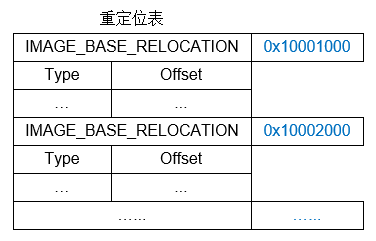

前言
在PE文件结构中，数据目录表对应的信息很重要，这里对其中几个常用的进行介绍。
资源表
资源表用来存储程序的各种界面数据，比如菜单、图标、版本信息等，其结构体如下
1 | typedef struct _IMAGE_RESOURCE_DIRECTORY { |
资源在PE文件中是以目录结构的形式存在的，一般情况下这个目录分3层，从根目录开始分别为资源类型、
目录资源ID、资源代码页。每层的头部是一个 IMAGE_RESOURCE_DIRECTORY 结构，并且在其后面跟着一个IMAGE_RESOURCE_DIRECTORY_ENTRY 结构数组，然后结构数组的每个成员则分别指向下一层目录结构。
1 | typedef struct _IMAGE_RESOURCE_DIRECTORY_ENTRY { |
第一个联合体的信息，是根据当前结构体所处的目录层次来决定的，位于 第1层 目录时 Name 有效，保存的
信息是 资源类型。位于 第2层 目录时 Id 或 结构体 有效，取决于此资源的 索引方式，如果用的是 编号索引
就是 Id 有效，否则 结构体 有效。位于 第3层 目录时 Name 有效，保存的信息是 语言类型。
第二个联合体的信息，理论上是根据具体情况而定的，如果下级是一个 子目录 的话，那么就是 结构体 生效，
如果下级是 资源数据 则是字段 OffsetToData 生效。
当 NameIsString 为 1 时，NameOffset 指向一个 IMAGE_RESOURCE_DIR_STRING_U 结构体
1 | typedef struct _IMAGE_RESOURCE_DIR_STRING_U { |
当 Name 位于 第1层 目录时表示的 资源类型 如下表所示
| 类型值 | 资源类型 | 类型值 | 资源类型 |
|---|---|---|---|
| 0x00000001 | 鼠标指针（Cursor） | 0x00000008 | 字体（Font） |
| 0x00000002 | 位图（Bitmap） | 0x00000009 | 快捷键（Accelerators） |
| 0x00000003 | 图标（Icon） | 0x0000000A | 非格式化资源（Unformatted） |
| 0x00000004 | 菜单（Menu） | 0x0000000B | 消息列表（Message Table） |
| 0x00000005 | 对话框（Dialog） | 0x0000000C | 鼠标指针组（Group Cursor） |
| 0x00000006 | 字符串列表（String Table） | 0x0000000E | 图标组（Group Icon） |
| 0x00000007 | 字体目录（Font Directory） | 0x00000010 | 版本信息（Version Information） |
在经过3层目录的索引后，最后是一个 IMAGE_RESOURCE_DATA_ENTRY 结构体，定义如下
1 | typedef struct _IMAGE_RESOURCE_DATA_ENTRY { |
资源表的3层目录关系，如下图所示
重定位表
系统在加载DLL文件时，并不是每次都能加载到预期的 ImageBase 基址上，所以DLL都存在 基址重定位表，
用来修正相关的地址信息，另外EXE的 动态基址 技术，也是用 基址重定位表 实现的。
PE文件中的重定位信息是由多个 IMAGE_BASE_RELOCATION 结构体组成的，每个结构体只描述一个 4KB 大小
的分页内重定位信息，也就是 0x1000 字节，因此结构体中 VirtualAddress 的值总是为 0x1000 的倍数。
1 | typedef struct _IMAGE_BASE_RELOCATION { |
重定位的本质非常简单，就是比较实际加载地址与 ImageBase 的值，如果相等则不需要做任何操作，如果
不相等就需要把重定位表中指定的地址处加上这个差值。
TypeOffset 由两部分数据组成，高4位 表示 类型，低12位 表示 偏移。类型定义如下
| 值 | 信息 | 宏定义 |
|---|---|---|
| 0 | 无重定位操作，填0后用于4字节对齐 | IMAGE_REL_BASED_ABSOLUTE |
| 1 | 重定位偏移指向位置的高2个字节需要被修正 | IMAGE_REL_BASED_HIGH |
| 2 | 重定位偏移指向位置的高2个字节需要被修正 | IMAGE_REL_BASED_LOW |
| 3 | 重定位偏移指向的4个字节的地址需要被修正 | IMAGE_REL_BASED_HIGHLOW |
| 4 | 需要使用两项TypeOffset才能完成索引操作 | IMAGE_REL_BASED_HIGHADJ |
| 5 | 基址重定位应用于MIPS jump指令 | IMAGE_REL_BASED_MIPS_JMPADDR |
| 6 | 保留 | IMAGE_REL_BASED_RESERVED |
| 9 | 基址重定位应用于MIPS16 jump指令 | IMAGE_REL_BASED_IA64_IMM64 |
| 10 | 重定位偏移指向的8个字节（64位）地址需要被修正 | IMAGE_REL_BASED_DIR64 |
重定位表结构如下图所示
